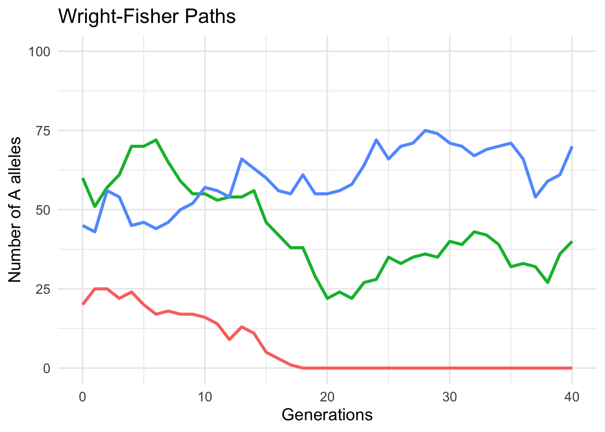
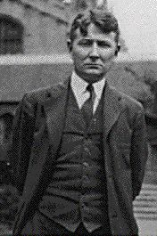
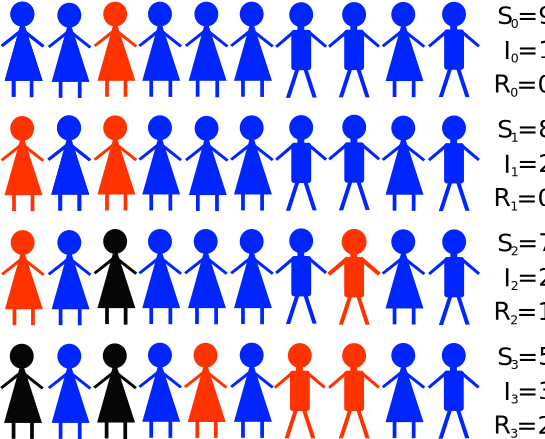
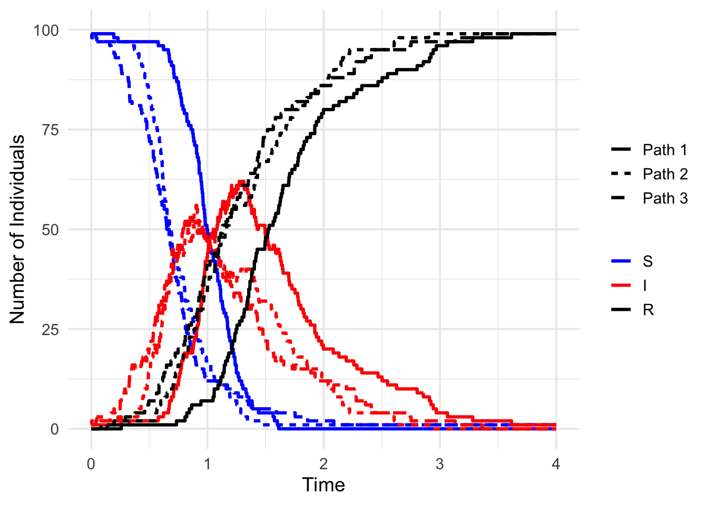

1 Introduction
1.1 Who may find these notes useful?
One may ask a reasonable question: “Why do we need yet another set of lecture notes with a fairly elementary treatment, from a modern probability theory point of view, of stochastic processes?” Indeed, there are already many books covering much of the material presented here. Moreover, we have borrowed material from many of these excellent texts, as the reader will see in our bibliographic remarks at the end of each chapter. So why did Peter Guttorp feel the need to write his “Stochastic Modeling of Scientific Data” book in the 90s (Guttorp 1995) and why did we feel the need to update this book with these lecture notes? The answer lies in the second part of the title of our lecture notes: we would like to show how statisticians think about stochastic processes when we use them to answer scientific questions.
Our statistical point of view differs from many standard expositions of stochastic modeling because we emphasize thinking about the data generating processes carefully and focusing on properties of stochastic models needed in order to fit these models to data. For example, long term behavior of stochastic processes are of less interest when observations generated from theses processes are availalbe only during a short period of time. Therefore, statisticians are more interested in transient bevavior of stochastic processes: transition probabilities of Markov processes, first passage times, etc. Markov chain Monte Carlo algorithms offer one notable exception to this general rule. Emphasis on computationally relevant mathematical results is another feature of these notes. A mathematical result is deemed computationally relevant if it allows us to compute a property of the stochastic process of interest with reasonable efficiency to be used inside statistical algorithms.
Our target audience is graduate students in Applied Mathematics, Computer Science, Engineering, and Statistics. In our classes, we also had many excellent mathematically prepared PhD students from Biological and Social Sciences who found the classes useful for their dissertation research. Most parts of these lecture notes follow the following structure:
- We introduce a class of stochastic processes and demonstrate what natural phenomena can be modelded by this class of models.
- Next, we describe how this class of stochastic processes can be “observed.” In other words, if we model a natural phenomenon with a stochastic process, we would like to show what kind observations/measurements we can realistically expect to be available to learn about this natural phenomenon.
- We then demonstrate how to perform statistical inference with these types of data. This step usually inloves deriving the likelihood for the model and data in hand and devising a computationally feasible way to perform either maximum likelihood or Bayesian inference. In some cases we also discusss non-likelihood-based inference.
We now introduce two stochastic models and pose mathematical and statistical questions that we would like the reader to be able to answer after mastering the material in these notes.
1.2 Motivating Examples
Our examples come from two disciplines with a long history of using stochastic models and developing statistical methods for fitting these models to data: population genetics and infectious disease dynamics. If the reader wants to learn more about mathematical and statistical developments in these disciplines we recommend the following texts: (Ewens 2004) and (Andersson and Britton 2012).
1.2.1 Wright-Fisher model of genetic drift
Historical note
 Ronald Fisher
Ronald Fisher
1890–1962
British statistician and geneticist Ronald Fisher and American geneticist Sewall Wright, together with a British mathematical biologist, Jack Haldane, laid a foundation for what is now known as modern evolutionary synthesis — a theory that reconciled seeming discrepancies between Darwinian and Mendelian schools of thought on evolution and natural selection. The Wright-Fisher model and its various modifications played a pivotal role in this synthesis.
 Sewall Wrigth
1889–1988
Consider a population of \(m\) individuals. All individuals are diploid, meaning that each member of the population carries two copies of their chromosomes. Suppose we are interested in a particular “gene” on one of the chromosomes. Here, a “gene” is loosely defined as stretch of DNA, not necessarily a protein coding region. Since our population is diploid, we have \(2m\) genes in total. Suppose that the gene under consideration has only two possible variants, called alleles in genetics: \(A\) and \(a\). Let \(X_n\) be the number of \(A\) alleles in the population at generation \(n\). We assume that there is no selection acting on our gene, so we are interested in random fluctuations of allele frequencies under neutrality. We also assume that the population size stays constant and that individuals in the population mate at random with each other. Under all these assumptions, it is reasonable to postulate the following stochastic mechanism for changes in allele counts. During each reproductive cycle, the genes of the next generation are obtained by sampling with replacement genes from the previous generation. To keep the population size constant, the number of samples is equal to \(2m\). Figure Figure fig-wright-fisher-diagram shows an example of such processes for a population of 5 individuals (10 genes) and 4 generations. This stochastic process is called the Wright-Fisher model in population genetics (Fisher 1930; Wright 1931).
As we will see in later chapters, it is easy to simulate realizations of processes like the Wright-Fisher model. Figure fig-wright-fisher-paths shows three random trajectories of the Wright-Fisher model, each starting with its own value for the intial condition \(X_0\). For these simulations, we set the population size to \(m=50\) (100 genes) and evolved the system for 40 generations. Notice that by construction, \(X_n\) will eventually get absorbed into either \(X_{\infty} =0\) or \(X_{\infty} = 2m\). However, after a finite number of generations it may end up with any value between 0 and \(2m\).
Using tools from stochastic modeling, we would like to answer the following questions:
- What is the probability that \(X_n\) get absorbed in \(X_{\infty} =0\) vs. \(X_{\infty} = 2m\)?
- How quickly (in how many steps) does the absorption occur?
- How can we extend this model to achieve non-trivial allele frequencies (\(0 < X_{\infty} < 2m\)) in the population at equilibrium?
1.2.2 Susceptible-Infected-Recovered (SIR) epidemic model
Consider a population of \(N\) individuals. Let \(I_t\) be the number of individuals infected with a pathogen (e.g., influenza virus), \(S_t\) be the number of susceptible individuals, and \(R_t\) be the number of recovered or removed invividuals. Assuming that infected individuals become infected immediately once infected and setting an initial condition for the system (e.g., \(I_0=1\), \(S_0= N-1\), and \(R_t=0\)), we would like to model the state of the epidemic, \((I_t, S_t, R_t)\) as a continuous-time stochastic process. We further assume that recovered individuals stay recovered forever, the system is closed and that the population size stays constant: \(I_t + S_t + R_t = N\). Transmission and recovery events happen at random times; only one event is allowed to happen instanteously at a particular time. The rates are constant across time. We will be able to complete the mathematical construction of this process when we get to continuous-time Markov chains in sec-ctmc. This model is called an SIR model in infectious disease epidemiology.

We are interested in answering the following questions:
- How to define this Markov process so it can produce reasonable stochastic behavior of an epidemic in a closed population?
- What is the distribution of the total number of individuals that become infected during the course of the epidemic?
- What is the probability that all individuals in the population become infected?
- How can we infer parameters of the SIR model given partial information about infected/uninfected status of individuals in the populations?
- How do we make forecasts about progression of the epidemic given noisy data during the initial stage of the epidemic?
Notice that the last two questions usually fall outside of the scope of a typical book on applied probability and/or stochastic processes. Our exposition of stochastic processes is different in that we are primarily interested in applications of stochastic processes to data analyses arising in sciences.

Andersson, H., and T. Britton. 2012. Stochastic Epidemic Models and Their Statistical Analysis. Vol. 151. Springer Science & Business Media.
Armitage, P., and J. F. Bithell. 2009. “Norman Thomas John Bailey, 1923–2007.” Journal of the Royal Statistical Society Series A: Statistics in Society 172 (3): 689–90.
Bailey, J. 1986. “An Improbable Path.” In The Craft of Probabilistic Modeling: A Collection of Personal Accounts, edited by J. Gani, 64–87. Berlin: Springer-Verlag.
Ewens, W. J. 2004. Mathematical Population Genetics. 2nd ed. New York: Springer.
Fisher, R. A. 1930. The Genetical Theory of Natural Selection. Oxford: Clarendon Press.
Guttorp, P. 1995. Stochastic Modeling of Scientific Data. Suffolk, Great Britain: Chapman & Hall.
Wright, S. 1931. “Evolution in Mendelian Populations.” Genetics 16: 97–159.